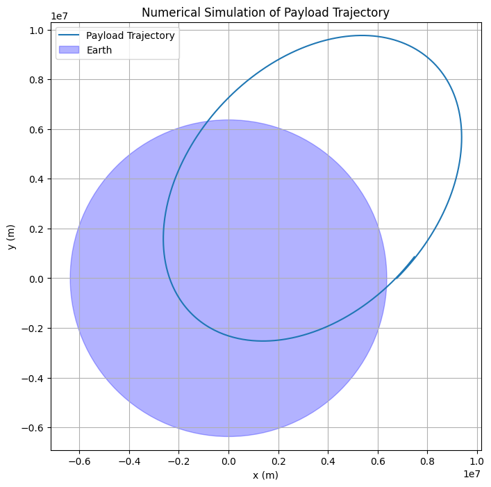
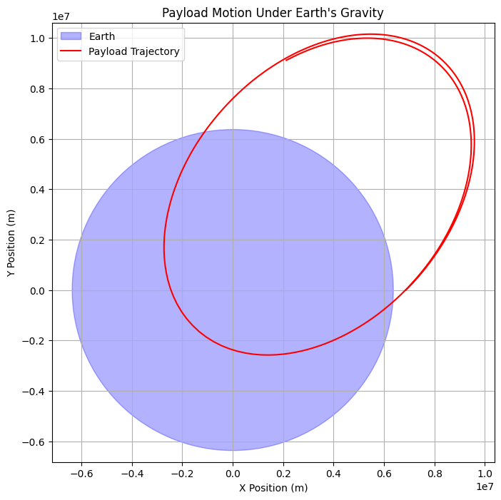

Problem 3
Task 1. Analysis of Payload Trajectories Near Earth
1. Types of Trajectories
When a payload is released from a moving rocket, its path depends on initial velocity (\(v\)) and gravitational influence. The possible trajectories include:
1.1 Elliptical Orbit (\(v < v_2\))
- If the payload’s velocity is below escape velocity (\(v_2 = 11.2\) km/s for Earth), it follows a closed elliptical orbit.
- If released at low altitude, it may eventually re-enter Earth's atmosphere due to air drag.
- Example: Satellites in Low Earth Orbit (LEO).
1.2 Parabolic Escape (\(v = v_2\))
- If released exactly at escape velocity, the payload follows a parabolic trajectory and never returns to Earth.
- The payload moves infinitely far but slows asymptotically to zero velocity.
- Example: Theoretical minimum velocity for deep space travel.
1.3 Hyperbolic Escape (\(v > v_2\))
- If released above escape velocity, it follows a hyperbolic trajectory and escapes Earth’s gravity permanently.
- The excess velocity (\(v > v_2\)) determines the spacecraft’s future motion.
- Example: Voyager probes leaving the solar system.
2. Governing Equations
Using Newton’s Law of Gravitation and Energy Conservation:
- Total Energy (\(E\)) determines trajectory type: $$ E = \frac{1}{2} m v^2 - \frac{G M m}{r} $$
- \(E < 0\) → Elliptical Orbit
- \(E = 0\) → Parabolic Escape
-
\(E > 0\) → Hyperbolic Escape
-
Orbital Equation (for conic sections): $$ r(\theta) = \frac{p}{1 + e \cos\theta} $$
- \(e < 1\) → Ellipse
- \(e = 1\) → Parabola
- \(e > 1\) → Hyperbola
3. Real-World Applications
- Satellite Deployment: Ensuring correct velocity for stable orbits.
- Interplanetary Travel: Using gravity assists for hyperbolic escapes.
- Re-Entry Scenarios: Predicting payload descent for controlled landings.
Task 2. Numerical Analysis of Payload Trajectory
1. Problem Overview
To determine the trajectory of a payload released near Earth, we use Newton's Second Law and Gravitational Force to compute its motion numerically. The motion is governed by:
where the gravitational force is:
We solve this using numerical integration methods like the Runge-Kutta (RK4) method.
2. Python Simulation
The following script computes and visualizes the payload’s trajectory based on initial conditions.
import numpy as np
import matplotlib.pyplot as plt
from scipy.integrate import solve_ivp
# Constants
G = 6.67430e-11 # Gravitational constant (m³/kg/s²)
M = 5.972e24 # Mass of Earth (kg)
R_Earth = 6.371e6 # Radius of Earth (m)
# Function to compute acceleration due to gravity
def equations(t, state):
x, y, vx, vy = state
r = np.sqrt(x**2 + y**2)
ax = -G * M * x / r**3
ay = -G * M * y / r**3
return [vx, vy, ax, ay]
# Initial conditions
altitude = 400e3 # 400 km above Earth
v_initial = 7800 # Initial velocity (m/s)
angle = np.radians(45) # Release angle
x0, y0 = R_Earth + altitude, 0
vx0, vy0 = v_initial * np.cos(angle), v_initial * np.sin(angle)
# Time span and solving the equations
t_span = (0, 6000) # Simulate for 6000 seconds
initial_state = [x0, y0, vx0, vy0]
sol = solve_ivp(equations, t_span, initial_state, method='RK45', t_eval=np.linspace(0, 6000, 1000))
# Plot the trajectory
plt.figure(figsize=(8, 8))
plt.plot(sol.y[0], sol.y[1], label="Payload Trajectory")
circle = plt.Circle((0, 0), R_Earth, color='blue', alpha=0.3, label="Earth")
plt.gca().add_patch(circle)
plt.xlabel("x (m)")
plt.ylabel("y (m)")
plt.title("Numerical Simulation of Payload Trajectory")
plt.legend()
plt.axis("equal")
plt.grid()
plt.show()

Task 3. Relation to Orbital Insertion, Reentry, and Escape
1. Orbital Insertion
- If a payload is released with a velocity close to the orbital velocity:
$$ v_{orbital} = \sqrt{\frac{G M}{r}} $$
it will enter a stable orbit around Earth.
- A velocity slightly below this value results in an elliptical orbit.
- A velocity slightly above can push the payload into a higher orbit.
2. Reentry Scenarios
- If the velocity is too low, Earth's gravity dominates, pulling the payload back, leading to atmospheric reentry.
- The trajectory follows a parabolic or elliptical path before descent.
- Atmospheric drag and heat buildup occur, requiring a heat shield for protection.
3. Escape Scenarios
- If the payload exceeds escape velocity:
$$ v_{escape} = \sqrt{\frac{2 G M}{r}} $$
it will break free from Earth's gravitational influence.
- This results in a hyperbolic trajectory, allowing for interplanetary travel.
- Space probes like Voyager 1 & 2 utilized escape velocity to leave the Solar System.
Task 4. Simulation of Payload Motion Under Earth's Gravity
Objective
Develop a computational tool to simulate and visualize a payload’s motion after being released from a moving rocket. The tool accounts for:
- Earth's gravitational force.
- Initial velocity and direction.
- Different possible trajectories (elliptical, parabolic, hyperbolic).
Python Simulation Code
import numpy as np
import matplotlib.pyplot as plt
from scipy.integrate import solve_ivp
# Constants
G = 6.67430e-11 # Gravitational constant (m^3 kg^-1 s^-2)
M = 5.972e24 # Mass of Earth (kg)
R = 6371e3 # Radius of Earth (m)
# Function defining the equations of motion
def equations(t, state):
x, y, vx, vy = state
r = np.sqrt(x**2 + y**2)
ax = -G * M * x / r**3
ay = -G * M * y / r**3
return [vx, vy, ax, ay]
# Initial conditions
altitude = 500e3 # 500 km above Earth
initial_speed = 7800 # m/s (approximate low Earth orbit velocity)
angle = np.radians(45) # Launch angle
x0 = R + altitude
y0 = 0
vx0 = initial_speed * np.cos(angle)
vy0 = initial_speed * np.sin(angle)
# Time span
t_span = (0, 10000) # Simulate for 10,000 seconds
t_eval = np.linspace(*t_span, num=500) # Time steps
# Solve the equations of motion
solution = solve_ivp(equations, t_span, [x0, y0, vx0, vy0], t_eval=t_eval, method='RK45')
# Extract results
x, y = solution.y[0], solution.y[1]
# Plot trajectory
plt.figure(figsize=(8, 8))
earth = plt.Circle((0, 0), R, color='blue', alpha=0.3, label="Earth")
plt.gca().add_patch(earth)
plt.plot(x, y, label="Payload Trajectory", color='red')
plt.xlabel("X Position (m)")
plt.ylabel("Y Position (m)")
plt.title("Payload Motion Under Earth's Gravity")
plt.legend()
plt.axis("equal")
plt.grid()
plt.show()
